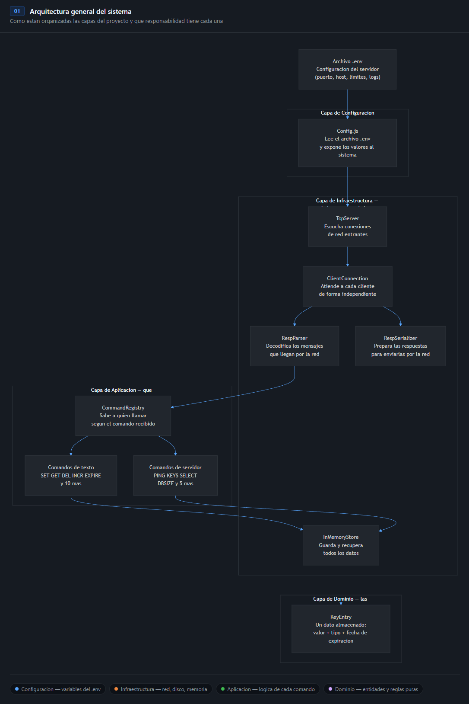
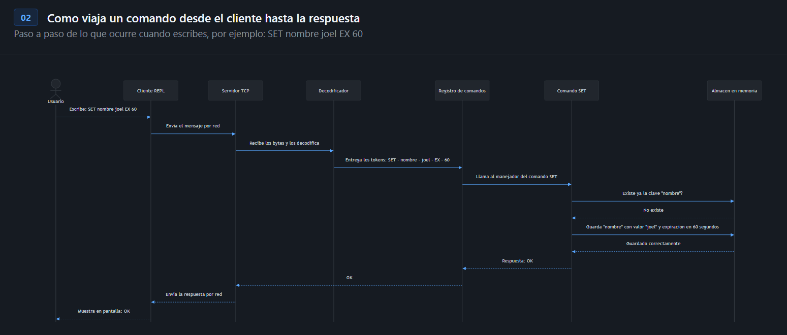
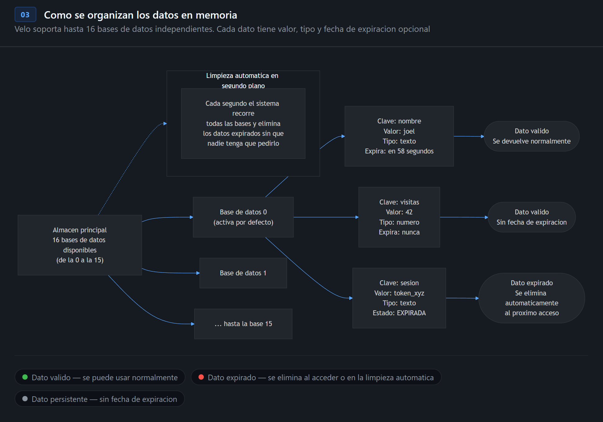

Arquitectura e internos
Como esta construido Velo por dentro: capas, protocolo, almacenamiento y TTL.
Capas del sistema — Clean Architecture
Velo sigue los principios de Clean Architecture: las capas internas no conocen nada sobre las capas externas. El dominio no sabe nada de TCP. La aplicacion no sabe nada de RESP. La infraestructura no contiene logica de negocio.

KeyEntry (un dato almacenado con su valor, tipo y TTL) y los contratos JSDoc que definen como debe comportarse el almacen (IDataStore) y los comandos (ICommandHandler). No tiene ninguna dependencia externa.
execute(store, args, db) que implementa la logica pura del comando. El CommandRegistry los registra y despacha por nombre.
TcpServer), el ciclo de vida por conexion (ClientConnection), el parser RESP (RespParser), el serializador (RespSerializer) y el almacen en memoria (InMemoryStore).
Config.js lee el archivo .env usando fs.readFileSync nativo, parsea los pares clave=valor, elimina comillas y exporta un objeto congelado (Object.freeze). Las variables de entorno del sistema tienen prioridad.
Flujo de un comando de extremo a extremo
Esta es la ruta completa que recorre un comando desde que el usuario lo escribe hasta que ve la respuesta en pantalla.

- Usuario escribe
SET nombre joel EX 60en el REPL. - Cliente serializa el comando a formato RESP y lo envia por TCP.
- TcpServer recibe la conexion y crea un
ClientConnectionpor socket. - RespParser acumula los chunks de bytes y emite el evento
'comando'con el array de tokens. - CommandRegistry busca el handler
SetCommandpor nombre. - SetCommand valida argumentos, consulta el store y almacena la nueva entrada.
- RespSerializer convierte la respuesta JS
{ ok: 'OK' }a la cadena RESP+OK\r\n. - Socket envia la cadena de vuelta al cliente, que la imprime en verde.
Estructura de archivos
.
├── .env ← Configuracion: HOST, PORT, DB_COUNT...
├── Makefile ← Atajos: make server / make client / make dev
├── package.json ← @low-level-js/velo, sin dependencias
└── src/
├── server.js ← Entry point: crea store, registry y servidor
├── client.js ← Entry point: REPL interactivo con readline
├── config/
│ └── Config.js ← Lee .env, exporta objeto congelado
├── domain/
│ ├── entities/
│ │ └── KeyEntry.js ← Entidad: value, type, expiresAt, isExpired()
│ └── ports/
│ ├── IDataStore.js ← Contrato del almacen (JSDoc)
│ └── ICommandHandler.js ← Contrato de comandos (JSDoc)
├── application/
│ ├── CommandRegistry.js ← Registro y despacho de los 23 comandos
│ └── usecases/
│ └── phase1/
│ ├── strings/ ← 15 comandos: SET GET DEL EXISTS EXPIRE...
│ └── server/ ← 8 comandos: PING ECHO DBSIZE KEYS...
└── infrastructure/
├── storage/
│ └── InMemoryStore.js ← Map<db, Map<key, KeyEntry>> + sweep
├── protocol/
│ ├── RespParser.js ← Parser incremental de Buffers TCP
│ └── RespSerializer.js ← Convierte JS → cadenas RESP
└── server/
├── TcpServer.js ← net.createServer + limite de conexiones
└── ClientConnection.js ← Ciclo de vida por socket
InMemoryStore — el almacen
Todos los datos viven en memoria dentro de un objeto InMemoryStore.
La estructura interna es un Map anidado: la clave externa es el indice de la base de datos (numero),
y la clave interna es el nombre de la clave string.

// _bases es el mapa raiz del almacen _bases: Map<number, Map<string, KeyEntry>> // Ejemplo del estado interno: { 0: { "nombre" → KeyEntry { value: "joel", expiresAt: null }, "sesion" → KeyEntry { value: "tok123", expiresAt: 1741480800000 }, "visitas" → KeyEntry { value: "42", expiresAt: null }, }, 1: {}, // base 1 vacia // ... 15: {} }
API principal del store
| Metodo | Descripcion |
|---|---|
get(db, clave) | Devuelve la KeyEntry o null si no existe / expiro (lazy check) |
set(db, clave, entry) | Guarda una KeyEntry en la base db |
del(db, ...claves) | Elimina una o varias claves, devuelve el numero eliminado |
exists(db, clave) | Devuelve true si la clave existe y no expiro |
keys(db, patron) | Devuelve claves activas que coinciden con el patron glob |
dbsize(db) | Devuelve el numero de claves activas en la base |
flushDb(db) | Elimina todas las claves de una base especifica |
flushAll() | Elimina todas las claves de todas las bases |
iniciarSweep() | Inicia el timer de limpieza periodica |
detenerSweep() | Detiene el timer (llamado en shutdown) |
Estrategia de expiracion — TTL dual
Velo usa una estrategia de doble capa para manejar la expiracion de claves, igual que lo hacen los almacenes de datos en memoria de produccion:
get()), el store verifica si
entry.isExpired() devuelve true.
Si expiro, se elimina inmediatamente y se devuelve null.Costo: O(1) por acceso. No agrega overhead si la clave no expiro.
setInterval recorre periodicamente todas las bases de datos y elimina las claves expiradas,
aunque nadie las haya solicitado. El intervalo es configurable con SWEEP_INTERVAL_MS.Se usa
.unref() para que el timer no impida que Node.js cierre el proceso si no hay mas trabajo pendiente.
get(db, clave) { const mapa = this._bases.get(db); const entrada = mapa?.get(clave); if (!entrada) return null; // 1. Lazy expiry — verificacion en cada acceso if (entrada.isExpired()) { mapa.delete(clave); return null; } return entrada; } iniciarSweep() { // 2. Sweep periodico — limpia en segundo plano const timer = setInterval(() => { const ahora = Date.now(); for (const mapa of this._bases.values()) { for (const [clave, entry] of mapa) { if (entry.expiresAt !== null && entry.expiresAt <= ahora) { mapa.delete(clave); } } } }, this._sweepMs); timer.unref(); // no bloquea el cierre del proceso }
Entidad KeyEntry
Cada dato almacenado es una instancia de KeyEntry, la unica entidad del dominio:
export const TipoDato = Object.freeze({ STRING: 'string', LIST: 'list', HASH: 'hash', SET: 'set', }); export class KeyEntry { constructor(value, type = TipoDato.STRING, expiresAt = null) { this.value = value; // string | Array | Map | Set this.type = type; // TipoDato enum this.expiresAt = expiresAt; // timestamp ms | null } isExpired() { return this.expiresAt !== null && Date.now() > this.expiresAt; } getTtlSegundos() { if (this.expiresAt === null) return -1; return Math.ceil((this.expiresAt - Date.now()) / 1000); } }
| Propiedad | Tipo | Descripcion |
|---|---|---|
value | string | Array | Map | Set | El dato almacenado. En Fase 1 siempre es string. |
type | TipoDato enum | El tipo de la clave. Requerido para respetar WRONGTYPE. |
expiresAt | number | null | Timestamp de expiracion en milisegundos. null significa sin expiracion. |